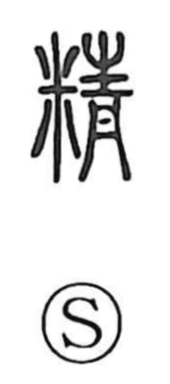

精

Uncategorized
Kun: | On: sei, shou
refined ・ pure ・ essence ・ spirit
Explanation
A phono-semantic character combining 米 “rice” with 青 as the phonetic, which cues the on reading sei. In early usage it refers to picking out rice—the choicest, most beautiful grains of rice, barley, and the five cereals selected as offerings to the deities. From this core sense of select purity it broadened to mean clean, beautiful, and exact, and in compounds like 精神 it further came to denote the functioning heart and mind, even the soul.